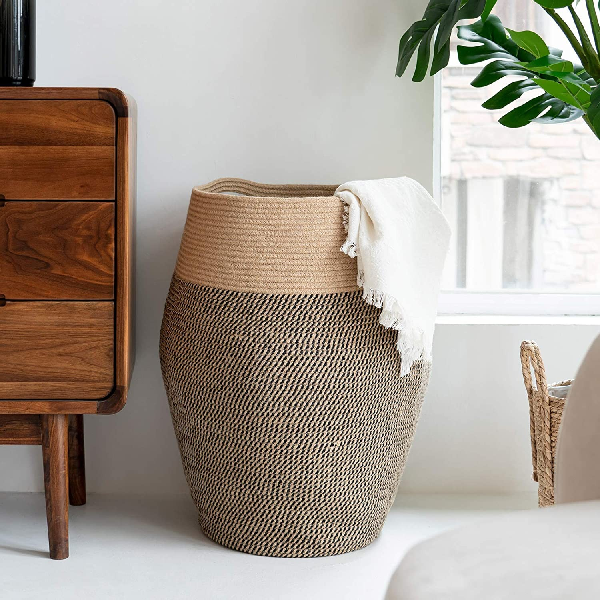
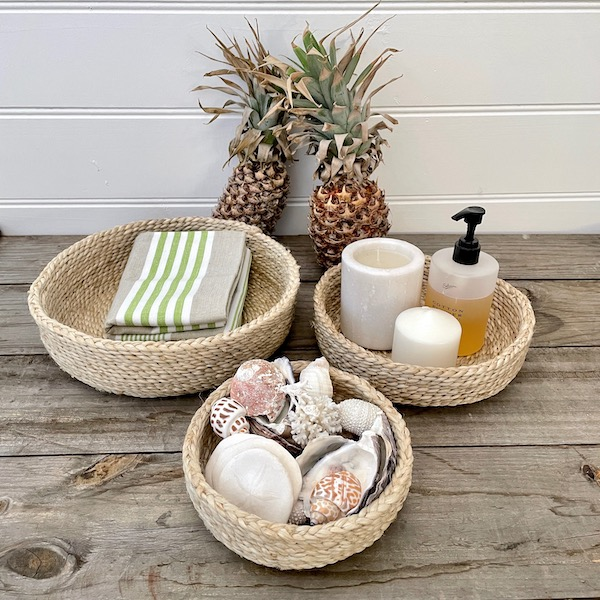
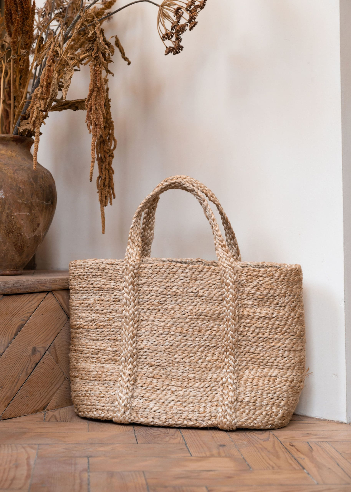

16$
Jute Basket
Product Description
Just Jute! This jute basket is hand made in rural Bangladesh by a Women’s Empowerment Programme. Constructed very simply from plaited jute bringing divine simplicity to your beach days out and picnics.

15$
Round Basket
Product Description
Silky braids of natural jute are woven and stitched into a carefully crafted set of 3 storage bowls. Clean lines, smooth fibres and circular design lend a relaxed style and simple elegance to everyday living. Carnival’s handcrafted baskets provide work and education for rural women artisans and their families through fair trade.

12$
Hanging Basket
Product Description
Jute Basket With Stripe, Jute Hanging Wall Baskets, Rustic Baskets Set, Storage Basket, Kitchen Organizer, Vegetable basket

18$
Basket Bag
Product Description
Natural Jute bag is made of 100% natural jute. The natural jute ropes are made of raw jute fiber. The bags are eco-friendly and long-lasting with use at the dining table and other places.
All of DEW Crafts are handmade, using natural fibers and materials with maintaining Fair Trade principles as a Certified Guaranteed Fair Trade Social Enterprise.